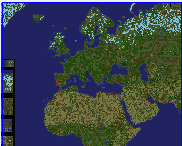
Description :
predators arrive is a map about humans in modern age trying to survive against 3 types of predators, these
types are ( Werewolf Light Blue, Zombie Dark Green and Dracula Brown ), humans choose countries to rather be
defensive or
wipe out the predators
Countries available:
Afghanistan Albania Algeria Austria Belarus Bulgaria Czechia Denmark Egypt Ethiopia England Finland France
Germany Greece Iceland Iran Iraq Ireland Italy Jordan Kazakhstan Libya Mali Mauritania Morocco Niger Nigeria
Oman Pakistan Palestine Portugal Poland Russia Romania Saudia-Arabia Serbia Sudan Slovakia Spain Sweden
Somalia Syria Turkey Turkmenistan Tunisia UAE Ukranie Uzbekistan Yemen,
The number of countries are 50
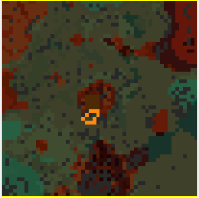
Description :
this is the most unbalanced map for a warcraft III player to play, say your prayers before starting.
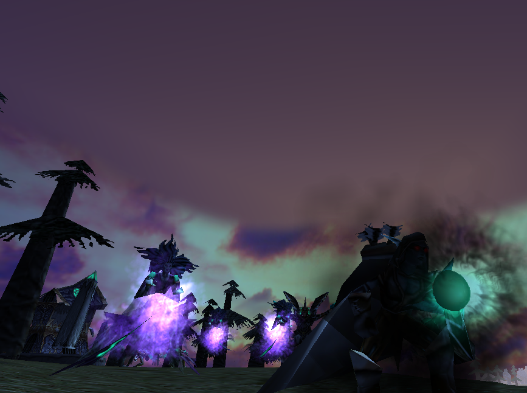
Description :
you know the final chapter in warcraft 3 the frozen throne? it's similar to it, where you control over obelisks for the win.
But guess what's different here?
it's lady sylvanas possessing heroes from different factions in order to maintain control over the obelisks before the dreadlords!
lady sylvanas with possessed lord garithos, grom hellscream and illidan stormrage against balnazzar, tichondrius, detheroc, varimathras and dalvengyr! :D
can add ai to play with offline, but because I am a low skilled map developer, ai sucks genuinely.
Screenshots:
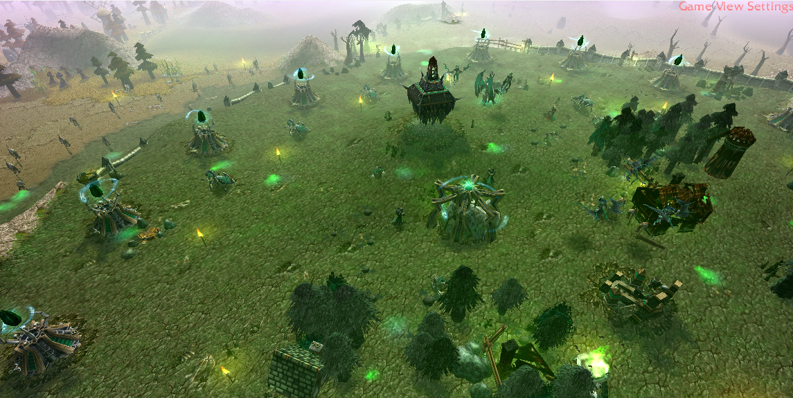
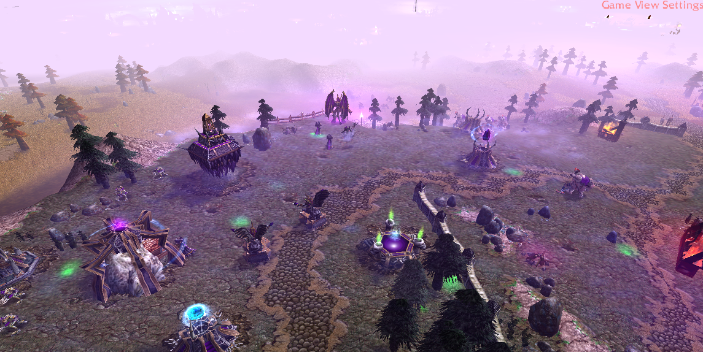
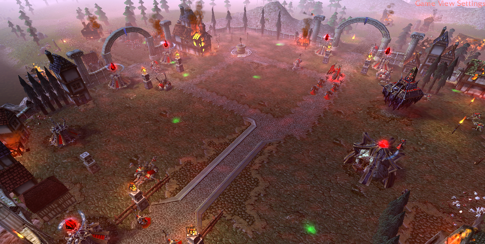
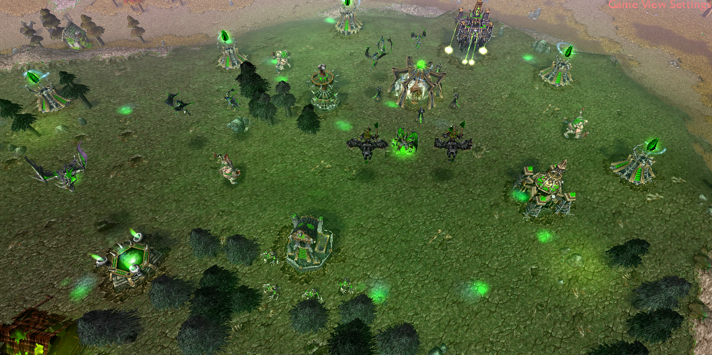
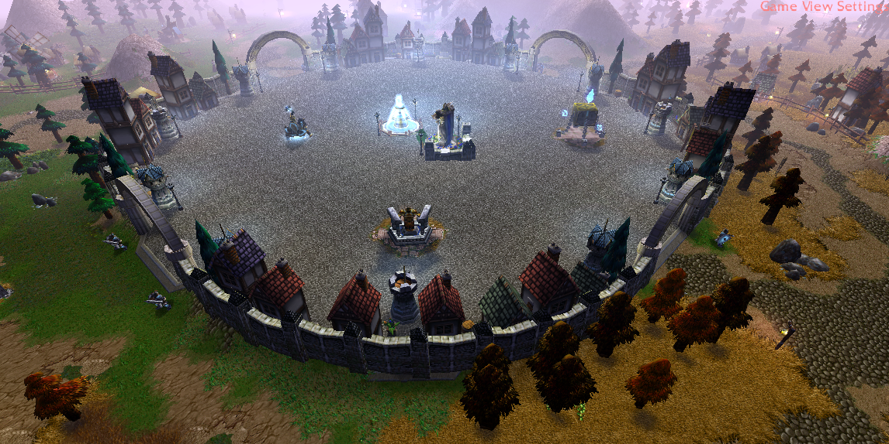
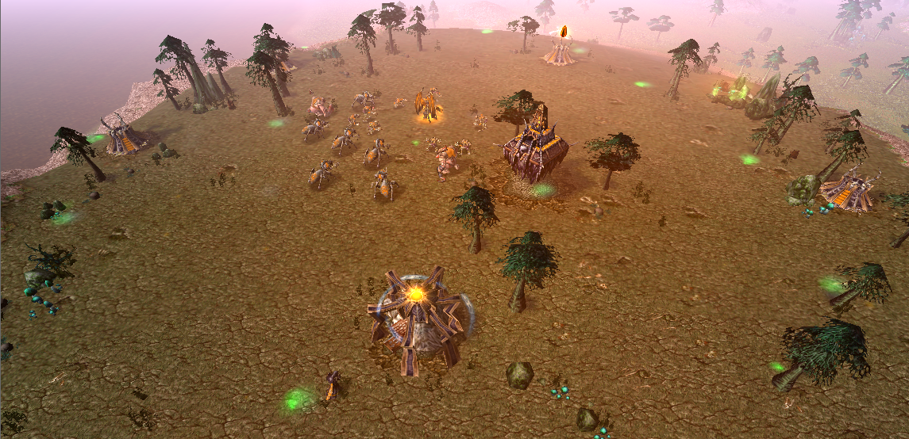
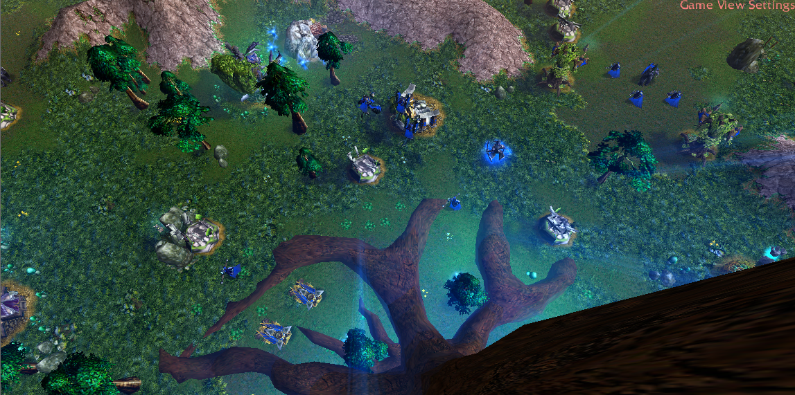
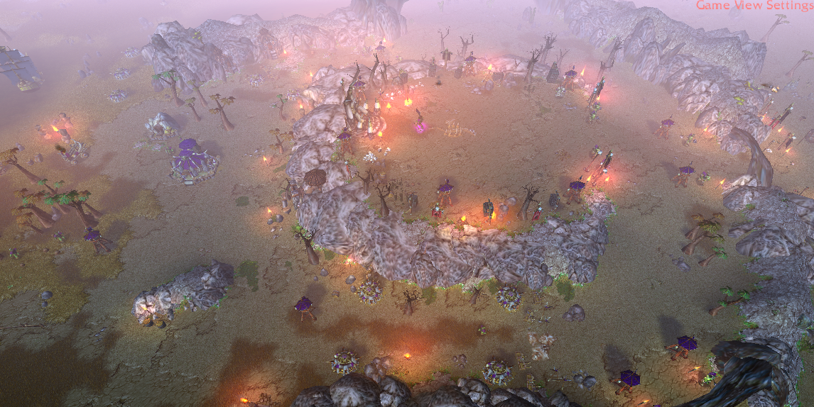